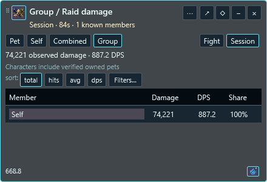
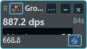

The title controls the main panel. The footer controls its own numeric readout. Both offer Pet, Self, Combined and Group and save independently.
Shown: Group in the main panel, Pet in the footer. Both use the same session and filters.


Synthetic data; focused normal/minimum-size review.